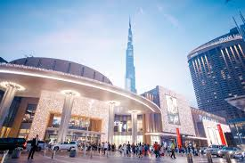

The Dubai Mall is the world’s largest destination for shopping, entertainment and leisure, located next to the world's tallest building, the Burj Khalifa. Featuring over 1,200 retail stores, two major department stores and hundreds of food and beverage outlets, The Dubai Mall covers more than 1 million sqm – an area equivalent to 200 football pitches.
For lovers of high fashion, over 70 signature outlets beckon your attention, including retailers such as Bloomingdale’s and Galeries Lafayette, the first in the Middle East. For haute couture, head to Fashion Avenue where you can experience the latest collections from world renowned designers and brands such as Versace, Burberry and more.
Entrance Of Dubai mall
By Ahmad Maraey on
Wow Amazing place with lots of brands and shopping inside, many premium brands expensive but deserve to visit plus access to fountain
By Andrew M on
This mall is huge. We got to visit the Dubai Mall for a few hours and it is a sight to see. It is easy to get lost in here as there are numerous floors with just about everything a shopper could want. There are lots of things to see apart from the shopping.
Copyright @ 2017 Share Your Travels.